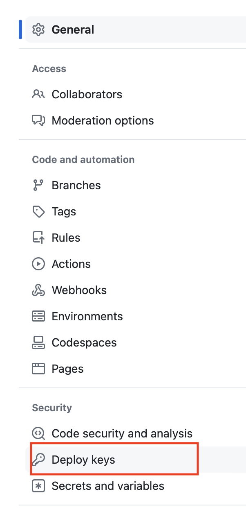

設定SSH KEY 連線
Mac
此方法可以建立不同github帳號和不同的repo的ssh key
原則為先建立公開和私有SSH金鑰,並先處理SSH Key,再clone repo會比較簡單
步驟1:建立SSH金鑰
- 打開Terminal
- 進入~/.ssh的資料夾
bash
cd ~/.ssh3.為每一個帳號和Repo建立不同的SSH Key
- 以下範例一次建立2個SSH Key
bash
ssh-keygen -t rsa -b 4096 -C "your-email-for-account1@example.com" -f id_rsa_account1
ssh-keygen -t rsa -b 4096 -C "your-email-for-account2@example.com" -f id_rsa_account2your-email-for-account1@example.com:必需是github的帳號email
id_rsa_account1:建立SSH Key的名稱
輸入後會出現下面幾行,如下所示:
- 會自動將金鑰建立於/Users/you/.ssh/id_rsa
- 取用這個鈕鑰有需要使用驗証碼(passphrase)嗎?(一般我直接按enter)
- 完成後,將產生私有金鑰id_rsa和公有金鑰id_rsa.pub
- 公有金鑰必需要放至github的repo內
操作與輸出
Generating public/private rsa key pair.
Enter a file in which to save the key (/Users/you/.ssh/id_rsa): [Press enter]
Enter passphrase (empty for no passphrase): [Type a passphrase]
Enter same passphrase again: [Type passphrase again]步驟2. 將SSH keys加入至SSH Agent
- 啟動SSH agent:
bash
eval "$(ssh-agent -s)"- 加入剛產生的SSH Key(沒有.pub的key)進入agent
bash
ssh-add ~/.ssh/id_rsa_account1
ssh-add ~/.ssh/id_rsa_account2- 檢查加入至SSH Agent的SSH Key
bash
ssh-add -L步驟3. 將Public key增加至repo內
- 顯示並複制顯示的public key至剪貼簿
bash
cat ~/.ssh/id_rsa_account1.pub- 至Github Repo內的Setting -> Deploy Keys
- 新增SSH key title(自訂一個名稱),貼上public key,並允許read/write

步驟4. 建立ssh的Configuration檔案
- 打開或建立SSH的config檔案
bash
vim ~/.ssh/config- 加入下列的設定內容至config檔內
config
# Host -是小名,ssh指令將知道這個小名,(小名將被設定至git remote url內)
# HostName和User -組合後就成為git@github.com
# IdentityFile -告知對應的ssh key
# AddKeysToAgent yes -自動將此ssh key加入至key agent
# UseKeyChain yes -如果ssh key使用時,需要使用密碼時,自動使用鑰匙圈內的密碼.由於我們建立ssh key時,並沒有使用密碼可以不設定。樹莓派並沒有鑰匙圈的功能,一定不可以使用,不然會出錯
Host github-personal
HostName github.com
User git
AddKeysToAgent yes
UseKeyChain yes
IdentityFile ~/.ssh/id_rsa_account1
# Work account
Host github-work
HostName github.com
User git
AddKeysToAgent yes
UseKeyChain yes
IdentityFile ~/.ssh/id_rsa_account2
# *的意思是所有使用上面的Host全部會自動套用下面的內容
Host *
AddKeysToAgent yes
UseKeyChain yes- 測試
- 直接使用githbu的位置
bash
ssh -T git@github.com- 使用小名的名稱
bash
ssh -T github-personal
ssh -T github-work步驟5. 使用小名的方式,clone repo自本機
- 請使用小名方式clone
- 小名已經定義在config內了
操作與輸出
#使用小名的方式clone
git clone github-personal:roberthsu2003/__2024_09_04_tvdi__.git注意:小名為github-personal:
操作與輸出
#使用github官方的方式clone
git clone git@github.com:roberthsu2003/__2024_09_04_tvdi__.git注意:官方的位置設定在git@github.com:
步驟6. 更改每個repo內的local user.name和user.email
- 全域的要設定--global
bash
git config user.name "Your Name"
git config user.email "your-email-for-account1@example.com"Raspberry-樹莓派
- 設定方法和Mac是一樣的,只要注意樹莓派並沒有鑰匙圈的功能,config檔內的設定不可以有
UseKeyChain yes
config
# Host -是小名,ssh指令將知道這個小名,(小名將被設定至git remote url內)
# HostName和User -組合後就成為git@github.com
# IdentityFile -告知對應的ssh key
# AddKeysToAgent yes -自動將此ssh key加入至key agent
# UseKeyChain yes -如果ssh key使用時,需要使用密碼時,自動使用鑰匙圈內的密碼.由於我們建立ssh key時,並沒有使用密碼可以不設定。樹莓派並沒有鑰匙圈的功能,一定不可以使用,不然會出錯
Host github-personal
HostName github.com
User git
AddKeysToAgent yes
IdentityFile ~/.ssh/id_rsa_account1
# Work account
Host github-work
HostName github.com
User git
AddKeysToAgent yes
IdentityFile ~/.ssh/id_rsa_account2
# *的意思是所有使用上面的Host全部會自動套用下面的內容
Host *
AddKeysToAgent yes